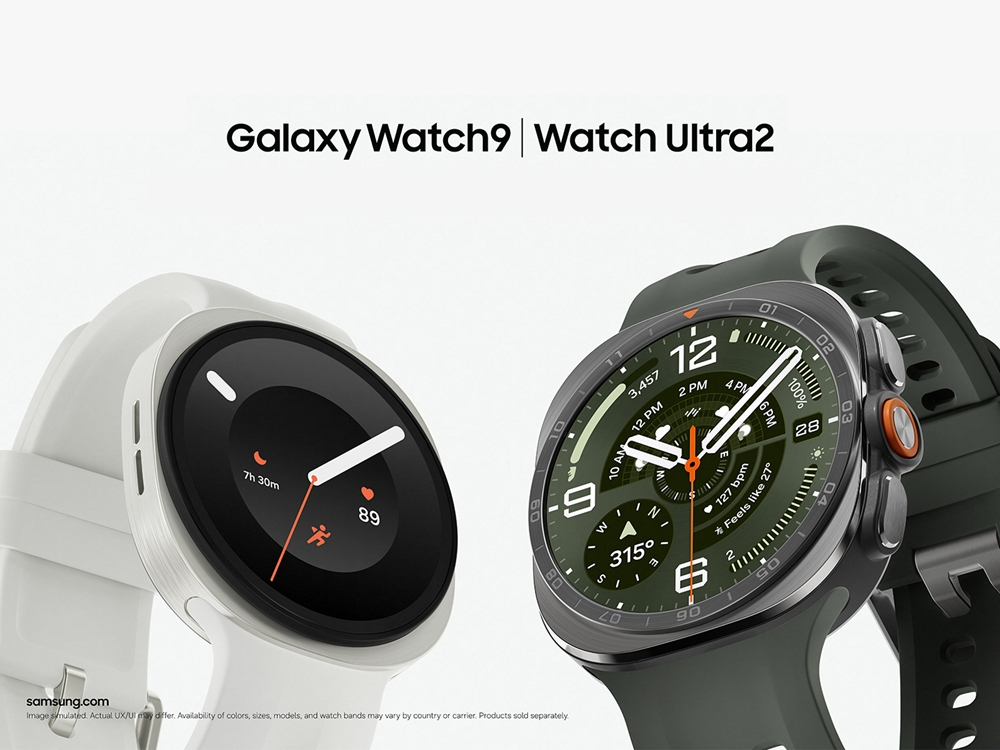
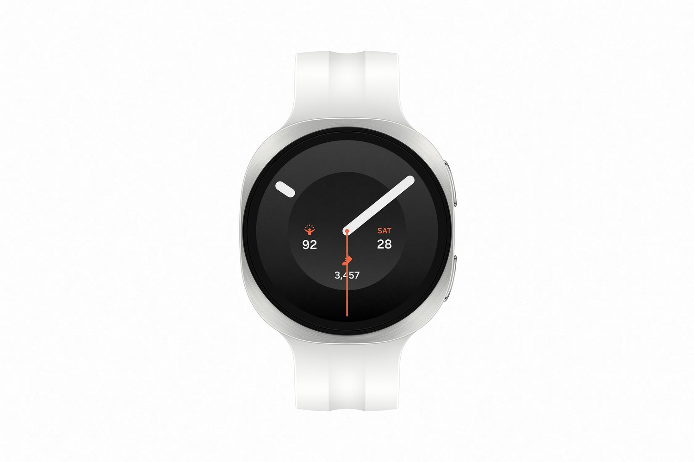
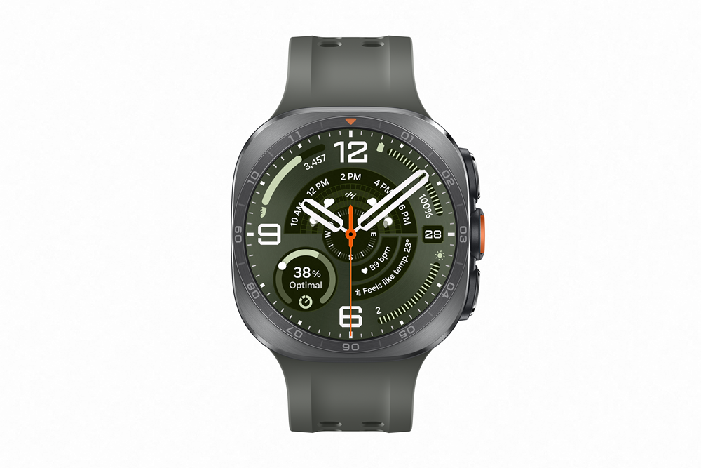

갤럭시 워치9·워치 울트라2 변경점 총정리 — 배터리·다이빙·가격 비교
갤럭시 워치9과 갤럭시 워치 울트라2, 정확히 뭐가 달라졌냐는 질문이 많더라고요. 두 모델은 2026년 7월 22일(현지시간) 영국 런던 갤럭시 언팩 2026에서 함께 공개됐고, 둘 다 배터리가 커졌어요. 갤럭시 워치 울트라2는 다이빙 브랜드 마레스와 손잡은 전용 기능까지 새로 생겼고요.
갤럭시 워치9은 삼성전자의 표준형 스마트워치고, 갤럭시 워치 울트라2는 다이빙 같은 아웃도어 활동에 특화된 상위 모델이에요. 배터리·다이빙·가격, 이 세 가지에서 차이가 갈려요.

갤럭시 워치9(왼쪽)과 갤럭시 워치 울트라2(오른쪽)
이미지 출처: 삼성전자 뉴스룸
갤럭시 워치9, 주요 사양과 달라진 점
갤럭시 워치9의 핵심은 새 플랫폼과 커진 배터리예요. 화면 밝기는 최대 3,000니트로 전작과 같아요(니트는 화면 밝기 단위예요).
퀄컴의 스냅드래곤 웨어 엘리트(모델명 SDW6100, 3나노미터 공정 5코어 칩)를 탑재한 게 이번 워치9의 첫 번째 변화예요. 울트라2에도 같은 플랫폼이 들어갔어요.
배터리는 40mm 기준 390mAh로, 이전보다 20% 늘었어요. 44mm는 445mAh예요. 삼성전자는 "이전보다 20% 향상된 390mAh 배터리"라고 설명했어요.
디스플레이는 사파이어 크리스탈에 최대 3,000니트예요. 사이즈별 지름·해상도·크기·무게·색상은 아래 표로 정리했어요.
| 항목 | 40mm | 44mm |
|---|---|---|
| 지름 | 34.0mm | 37.3mm |
| 해상도 | 438×438 | 480×480 |
| 크기 | 40.4×42.7×8.6mm | 43.7×46.0×8.6mm |
| 무게 | 31.5g | 34.0g |
| 색상 | 크림·그라파이트 | 실버·그라파이트 |
디자인은 전작의 쿠션 디자인을 유지했어요. 가벼운 알루미늄 바디에 실리콘 밴드를 적용했고요. 저장공간은 2GB 메모리에 32GB 스토리지예요.

갤럭시 워치9 제품 이미지
이미지 출처: 삼성전자 뉴스룸
갤럭시 워치 울트라2, 배터리·화면·성능 사양은 어떤가요
갤럭시 워치 울트라2의 핵심은 커진 배터리와 밝아진 화면, 강력해진 처리 성능이에요.
배터리는 800mAh로, 이전 모델 대비 35% 늘어난 수치예요. 삼성전자는 울트라2를 갤럭시 워치 라인업 중 역대 최고 성능 모델로 소개했어요.
디스플레이는 최대 5,000니트예요. 삼성전자는 스마트워치 중 이 밝기가 처음이라고 설명해요. 사파이어 크리스탈 소재에 지름 38.5mm, 해상도 498×498이에요.
소재는 티타늄이고, 색상은 본체 기준으로 티타늄 실버·티타늄 그레이 두 가지예요. 크기는 47.1×47.4×10.7mm, 무게는 61.5g이에요.

갤럭시 워치 울트라2 정면 이미지
이미지 출처: 삼성전자 뉴스룸
플랫폼은 워치9과 같은 스냅드래곤 웨어 엘리트예요. 삼성전자 설명으로는 800mAh 배터리와 이 플랫폼 조합이 처리 속도와 GPS 추적 정확도를 함께 끌어올렸어요. 저장공간은 2GB 메모리에 64GB 스토리지로 워치9보다 넉넉해요.
이런 고성능 하드웨어를 바탕으로 갤럭시 워치 울트라2엔 새로운 '트레일 러닝' 기능도 생겼어요. 기존 땀 손실 추정치 기능에는 실시간 수분 섭취 가이드가 새로 추가됐고요.
사이즈는 47mm 단일로 공개됐고, 공개된 가격은 LTE 모델 것뿐이에요.
갤럭시 워치9·갤럭시 워치 울트라2, 스펙 비교로 뭐가 다른가요
두 모델은 배터리·두께·무게·디스플레이 밝기·소재·방수등급·가격에서 차이가 나요(플랫폼은 SDW6100으로 같아요).
| 항목 | 갤럭시 워치9 | 갤럭시 워치 울트라2 |
|---|---|---|
| 플랫폼 | 스냅드래곤 웨어 엘리트(SDW6100) | 스냅드래곤 웨어 엘리트(SDW6100) |
| 배터리 | 390mAh(40mm) / 445mAh(44mm) | 800mAh |
| 두께 | 8.6mm(40·44mm 동일) | 10.7mm |
| 무게 | 31.5g(40mm) / 34.0g(44mm) | 61.5g |
| 디스플레이 밝기 | 최대 3,000니트 | 최대 5,000니트 |
| 소재 | 알루미늄 | 티타늄 |
| 방수·방진 | 5ATM + IP68 | 10ATM + IP69K |
| 가격(LTE 기준) | 40mm 529,100원 / 44mm 569,800원 | 47mm 969,100원 |
두 모델 다 미군 내구 규격 MIL-STD-810H를 통과했어요(삼성전자 뉴스룸 기준). IP68은 일정 수심에서 지속적으로 물에 잠겨도 견디는 방진·방수 등급이고, IP69K는 고온·고압 분사 세척을 견디는 별도 규격이에요. 두 등급은 시험 조건이 서로 달라요. 숫자로 우열을 매기진 않아요. ATM은 방수 압력 단위예요.
5,000니트는 삼성전자가 밝힌 '26년 6월 기준 전 세계 출시 스마트워치 시장 조사를 바탕으로 한 수치로, 강한 주변광 환경에서 구현되는 국소 최대 밝기예요(전체 화면 밝기는 이와 다를 수 있어요). 가격 행은 2026.07.22 발표 기준이에요.
울트라2는 국제 다이빙 장비 안전 규격 EN13319 인증도 받았어요. 수중에서 수심·수온·시간·도달한 최대 수심 같은 핵심 정보를 정확히 재고 보여줄 수 있다는 국제 표준이에요.
갤럭시 워치 울트라2 다이빙 기능, 마레스랑 뭘 하나요
삼성전자에 따르면 갤럭시 워치 울트라2는 물에 들어가는 순간부터 수심·시간·수온 같은 다이빙 데이터를 손목에서 바로 기록해요. 이건 워치 자체 기능으로 소개됐어요.
여기에 더해 다이빙 장비 브랜드 마레스와 공동 개발한 전용 앱이 올해 하반기 중 지원될 예정이에요. 삼성전자는 이 앱을 "세계적인 다이빙 장비 브랜드 마레스(Mares)와 공동 개발한 갤럭시 워치 울트라2 전용 앱"이라고 소개했어요. 이 앱에서 쓸 수 있는 항목은 이래요.
- 상승 속도 추적
- 하강 속도 추적
- 안전 감압 시간 안내
삼성전자는 이 고도화 기능을 앞으로 2년간 갤럭시 워치 울트라2에만 독점 제공한다고 설명했어요. 대상 범위는 Wear OS(구글의 스마트워치 운영체제예요) 기반 스마트워치예요.
헬스 기능은 뭐가 새로 생겼나요
갤럭시 워치9과 갤럭시 워치 울트라2에는 수면·활동·심혈관에 청력까지 아우르는 새 건강 관리 기능이 여러 개 추가됐어요.
- 심장 건강 점수
- 일일 유산소 부하
- 신체 체력 지수
- 청력
- 생체 징후(수면 중 심박수·심박변이도·호흡률·피부 온도·혈중 산소 포화도)
이 5가지는 올해 6월 4일 삼성전자가 미리 공개한 기능들이에요. 하반기 신제품에서 먼저 쓸 수 있고, 갤럭시 워치8 같은 이전 모델에도 업데이트로 순차 지원될 예정이에요.
심장 건강 점수는 수면·활동·체성분·혈관 스트레스 변화 데이터를 종합해서 매겨져요. 일일 유산소 부하는 계획대로 운동을 해야 할지 휴식을 취해야 할지 알려줘요.
신체 체력 지수는 심박수·최대 산소 섭취량 같은 지표를 삼성 헬스를 쓰는 또래 사용자들과 견줘 볼 수 있게 해줘요.
갤럭시 워치9과 갤럭시 워치 울트라2, 어느 쪽이 나한테 맞나요
매일 가볍게 차는 용도면 갤럭시 워치9, 다이빙·등산 같은 아웃도어까지 보면 갤럭시 워치 울트라2가 맞아요.
두 모델은 무게 차이가 꽤 커요. 울트라2(61.5g)는 워치9 44mm(34.0g)보다 27.5g 더 무거워요.
손목 부담과 가격 모두 워치9 쪽이 가벼워요. 40mm는 31.5g에 499,000원부터 시작하거든요.
| 이런 분께는 | 맞는 모델 | 근거 |
|---|---|---|
| 매일 가볍게 차고 다닌다 | 갤럭시 워치9 40mm | 31.5g · 499,000원부터 |
| 다이빙·등산 등 아웃도어가 많다 | 갤럭시 워치 울트라2 | 티타늄 · 10ATM · 800mAh |
| 야외에서 화면을 자주 본다 | 갤럭시 워치 울트라2 | 최대 5,000니트(워치9는 3,000니트) |
국내 가격·구성·출시일 정리
갤럭시 워치9과 갤럭시 워치 울트라2는 2026년 7월 28일부터 사전판매를 시작해 8월 7일부터 국내를 포함해 전세계에 순차 출시돼요.
삼성닷컴과 온라인 오픈마켓, 오프라인 매장 세 경로에서 사전 판매가 진행된다고 삼성전자는 밝혔어요.
| 구성 | 가격(공식 발표가 · 2026.07.22 기준) |
|---|---|
| 워치9 40mm 블루투스 | 499,000원 |
| 워치9 40mm LTE | 529,100원 |
| 워치9 44mm 블루투스 | 539,000원 |
| 워치9 44mm LTE | 569,800원 |
| 워치 울트라2 47mm LTE | 969,100원 |
워치9은 40mm·44mm 두 사이즈에 블루투스·LTE 통신 방식을 고를 수 있어요. 가장 저렴한 구성은 40mm 블루투스(499,000원)고, 가장 비싼 구성은 44mm LTE(569,800원)예요. 울트라2는 공개된 구성이 47mm LTE 하나라 969,100원이에요.
전작인 워치8·워치 울트라 가격은 이 발표 자료에 없어서, 오늘은 이번 가격만 정리했어요.
자주 묻는 질문
Q. 갤럭시 워치9·갤럭시 워치 울트라2의 청력 기능은 정확히 뭘 해주나요?
갤럭시 워치로 주변 소음 크기를 재고, 갤럭시 버즈로 이어폰 음량까지 함께 측정해요. 노출 정도가 안전한지 판단해서, 청력을 오래 지킬 수 있도록 가이드를 줘요.
Q. 수면 무호흡 감지 기능은 이번에 처음 생긴 기능인가요?
아니요, 이 기능은 2024년에 스마트워치 최초로 FDA(미국 식품의약국) 승인을 받았어요. 최근 FDA 승인을 한 번 더 받았고, 수면 중 호흡 장애 레벨에 대한 인사이트를 추가로 제공하도록 업그레이드됐어요.
참고한 곳
· 삼성전자 뉴스룸 — 삼성전자, '갤럭시 워치 울트라2·워치9' 공개
· 삼성전자 뉴스룸 — 삼성전자, 갤럭시 워치 차세대 헬스 기능 공개
✔ 같이 보면 좋아요
· 같은 갤럭시 언팩 2026에서 공개된 갤럭시 Z 폴드8 전작 비교 — 울트라·플립8 스펙까지 한눈에 글도 참고해 보세요.
하루 정리
· 갤럭시 워치9은 새 플랫폼을 얹었고 배터리가 40mm 390mAh·44mm 445mAh로 커졌어요(밝기는 전작과 같은 3,000니트예요).
· 갤럭시 워치 울트라2는 800mAh 배터리에 5,000니트 밝기, 마레스 협업 다이빙 앱까지 새로 붙었어요.
· 마레스 앱은 올해 하반기 중 지원 예정이고, Wear OS 기반 중에선 앞으로 2년간 울트라2 전용이에요.
· 가볍게 매일 차려면 갤럭시 워치9, 아웃도어·다이빙까지 보려면 갤럭시 워치 울트라2가 맞아요.
무게 차이만 직접 손목에 대보고 마지막으로 확인하시면 좋아요.